VEGETABLES AND FRUITS

 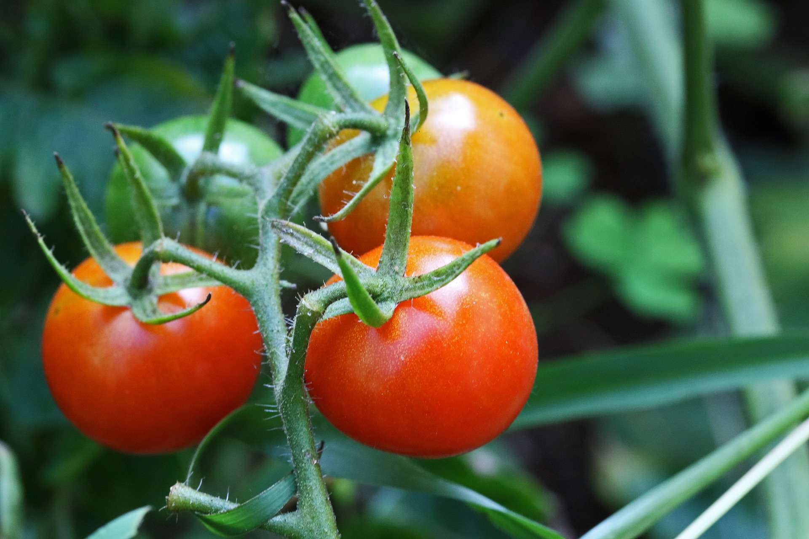
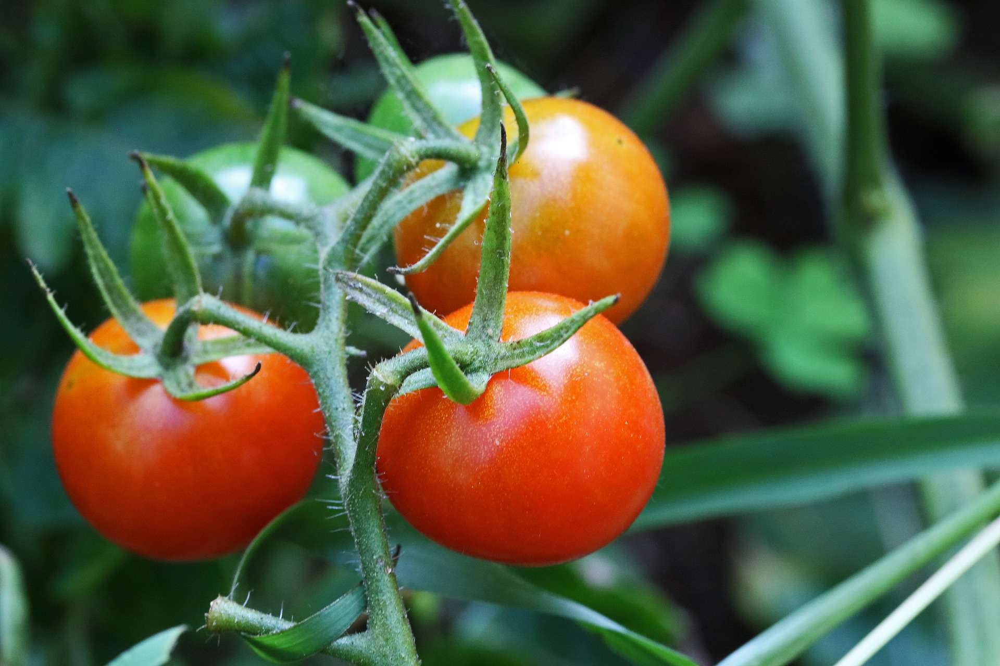
 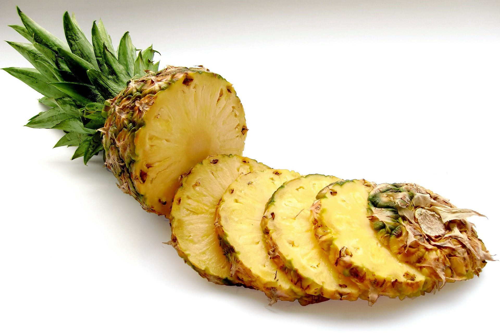
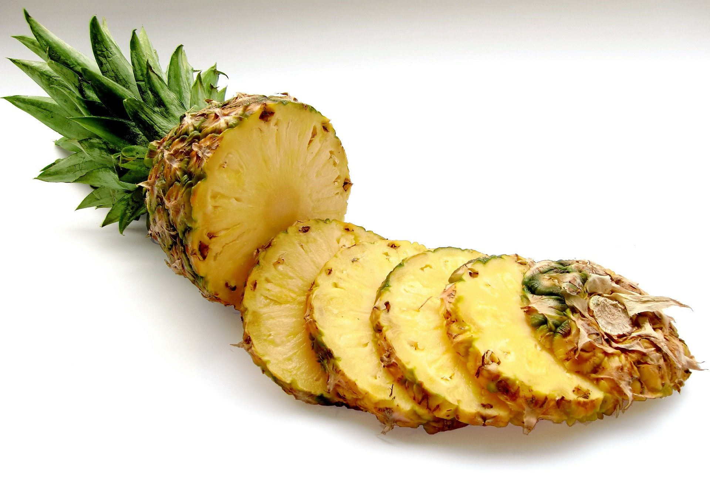


Spaghettiand tomatoes is a favourite meal that can be prepared in the shortest time possible ranging fron five to ten minutes. The recipe to make this meal does not contain many ingredients.
This is meal is most prefered by young kids.Tomatoes are used to make the meal taste great as well as give a colour to the meal.Tomatoes are rich in vitamin c, while spaghetti are rich in cabohydates.
 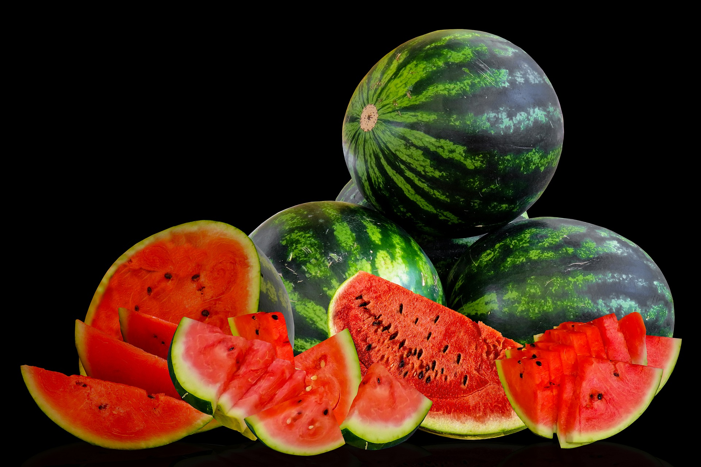
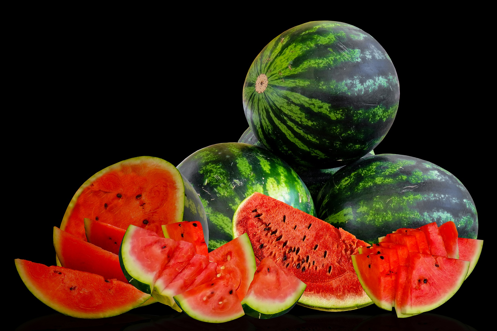
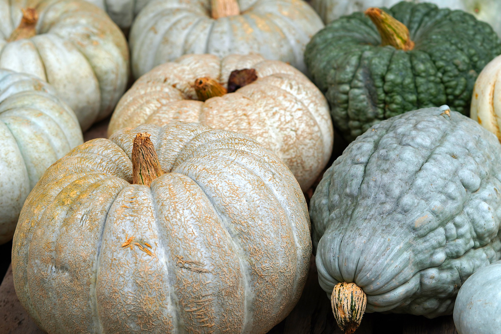
Pumpkin
Pumpkin is one of the most preferable food for young kind who have not yet build strong teeth to chew. They appear in different varieties and can not be grow in all habitat.
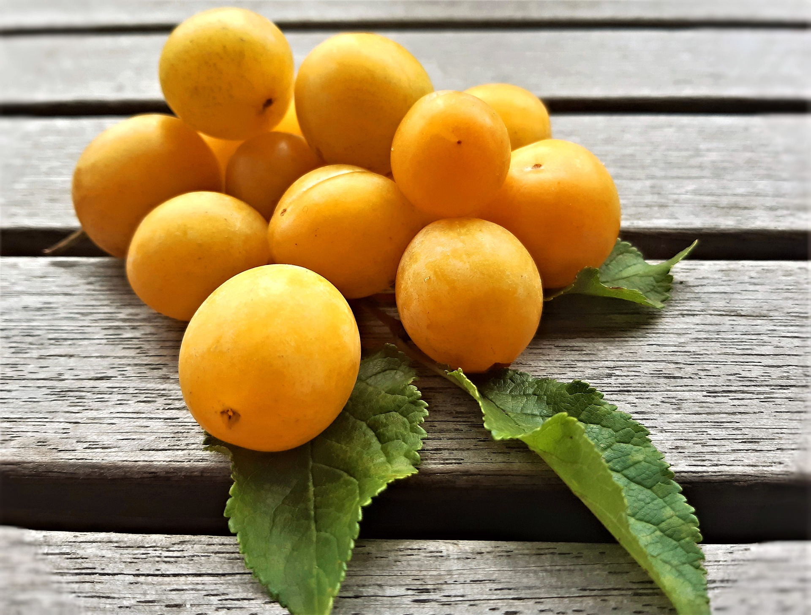
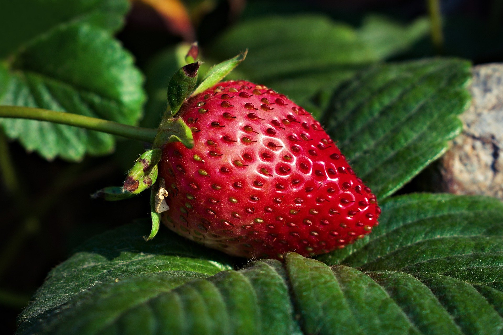
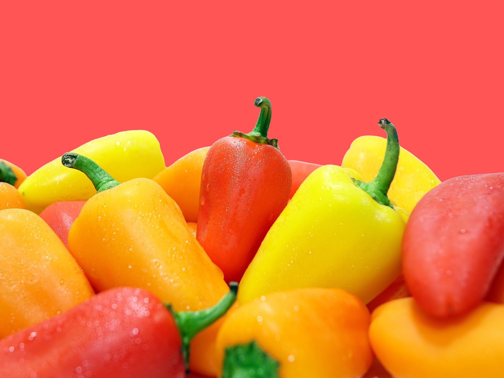
Apples are a popular fruit, containing antioxidants, vitamins, dietary fiber, and a range of other nutrients Due to their varied nutrient content, they may help prevent several health
conditions.
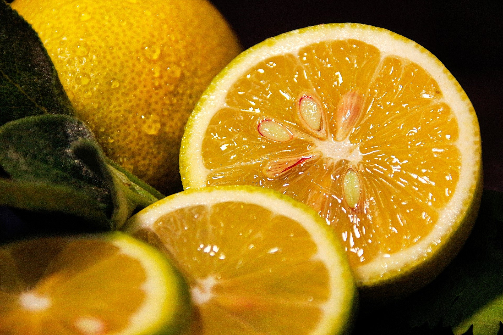
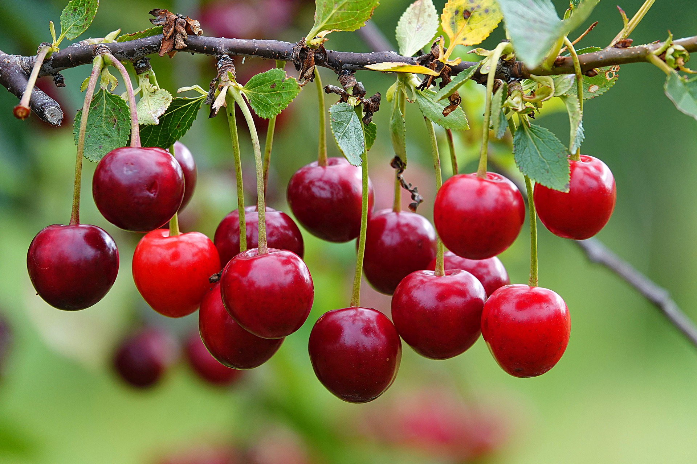

Berries
Berries are a good source of fiber, including soluble fiber. Studies show that consuming soluble fiber slows down the movement of food through your digestive tract, leading to reduced hunger and
increased feelings of fullness.
Melons are low in sodium, and very low in saturated fat and cholesterol. They are a good source of dietary fiber, vitamin K, potassium, and copper, and a very good source of vitamin C and vitamin B6.
They are a good source of vitamin C, as well as several other vitamins, minerals, and antioxidants. They heals wounds and gives you smoother skin